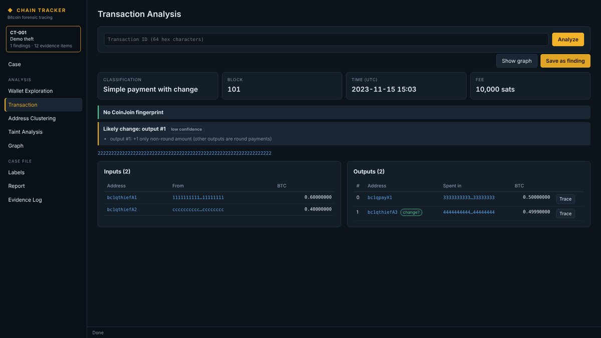
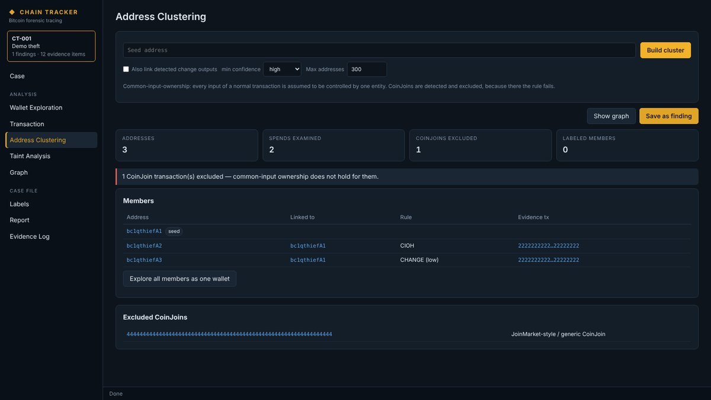
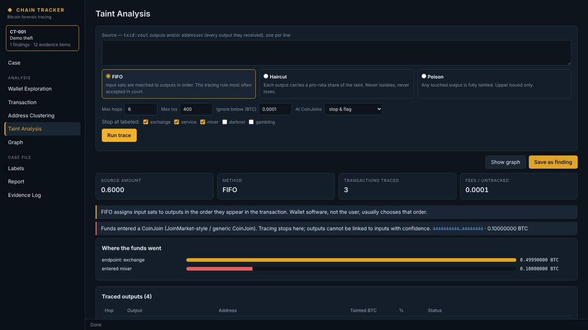
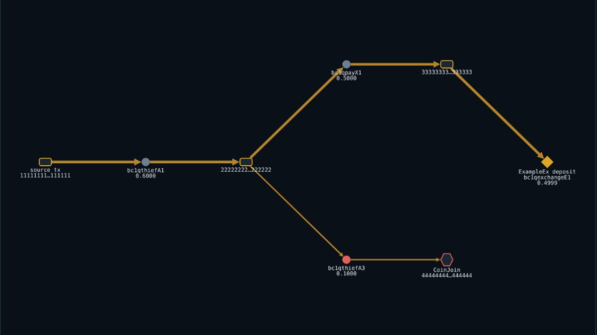
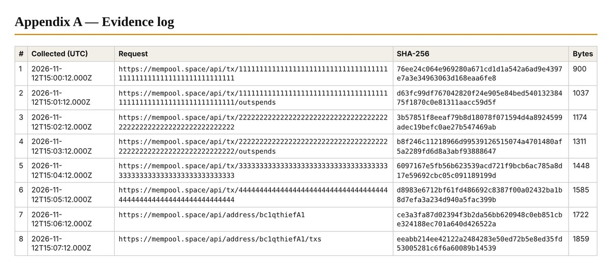

Transaction analysis
Each key transaction is broken down into its inputs and outputs. The software flags mixing transactions and identifies the likely change output, listing the reasons for each verdict.
This is a complete report produced by the Chain Tracker software from demonstration data. It shows the structure, tables and evidence log the software generates.
The stolen coins were spent together with the suspect’s own funds, then moved on. The trace follows the stolen amount using the FIFO method.
Each key transaction is broken down into its inputs and outputs. The software flags mixing transactions and identifies the likely change output, listing the reasons for each verdict.

Addresses likely controlled by the same person are grouped. Every link names the rule used and the transaction that supports it, so each grouping can be checked independently.

The traced amount is followed hop by hop until it reaches an exchange, a mixer or an unspent holding. The totals reconcile: what reached each destination plus fees equals the starting amount.

The whole path on one page: money flows left to right, exchanges are marked in amber, and mixing transactions in red.

Every report explains how each finding was reached, what the methods can’t prove, where each attribution came from, and lists every blockchain record collected with its SHA-256 fingerprint.

The explainers cover the ideas behind every section of this report.